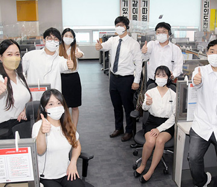

본문 콘텐츠 영역
사업소개
-
고객서비스사업
kt유선상품, 솔루션 관련 일반 및 전문상담
자세히보기 arrow_forward arrow_back_ios arrow_forward_ios
전화를 통해 kt상품에 대한 업무를 직접 방문없이 one-stop으로 해결가능 -
Biz솔루션사업
kt is 는 고객만족서비스 기반의 국내 최고 콜센터 아웃소싱 전문업체로 80년의 KT114 번호안내를 비롯한 다양한 운영 경험을 통해 콜센터 운영, 컨설팅, 시설임대...
자세히보기 arrow_forward arrow_back_ios arrow_forward_ios -
디지털사업
아파트, 업무용 빌딩 등의 엘리베이터 내에 설치된 모니터에 광고서비스를 송출하는
자세히보기 arrow_forward arrow_back_ios arrow_forward_ios
광고매체입니다 -
114번호안내사업
고객이 '114'번으로 전화하여 상호(또는 업종)나 특정업종의 가입자 전화번호를 문의하면 해당 전화번호를 검색하여 제공하는 서비스
자세히보기 arrow_forward arrow_back_ios arrow_forward_ios
ESG경영
ESG는 환경(Environmnet), 사회적 책임(Social), 기업 지배구조(Governance)의 약칭으로,
기업의 지속가능성을 평가하는 핵심지표로 활용합니다.
-
ESG전략
kt is는 고객과 임직원, 지역사회와 주주에게 다양한 가치를 제공하고
자세히보기 arrow_forward
지속적으로 만족시켜 신뢰를 얻으며 궁극적으로 사회와 더불어 나아갑니다. -
ESG활동
kt is는 지구 환경 개선에 기여하고 ‘Net Zero 2050’ 달성을 위해
자세히보기 arrow_forward
환경경영의 대상, 범위, 특성 등을 복합적으로 고려하여
주요 환경경영 정책을 선언하고 방침을 정의하여 긍정적인
환경영향을 최대화하기 위해 노력하겠습니다.
언론보도
-
- KT IS 타운보드, 사업 인수 8개월 만에...
- KT그룹 대표 고객서비스 전문기업 KT IS(대표이사
윤경근)는 올 3월, 지속성장을 위한 사업다각화... - 2023.01.05
-

- 택시 뒷좌석서 봤던 광고가 엘리베이...
- KT의 고객서비스 전문기업 KT IS가 카카오모빌리
티와 광고 사업에 본격적으로 나선다... - 2023.01.27
-
- kt is, 지난해 영업익 195억원…최대 매...
- [아시아경제 오수연 기자] kt is는 8일 2022년 영업
실적을 밝혔다. 매출액은 5358억원으로 전년 ... - 2023.02.09
-
- KT IS, 국내 최초 아파트 DX 솔루션 ...
- KT IS는 아파트 전용 디지털전환(DX) 솔루션 ‘타운
보드-ADS(Apartment DX Solution)’ 서비... - 2023.02.10
-

- kt is, AI와 사업노하우 "컨택센터 산업...
- [프라임경제] 2001년 설립한 kt is(대표 윤경근)는
KT 그룹의 고객서비스를 제공하는 고객센터... - 2023.02.12
공지사항
-
- kt is-kt cs 임직원 복지카드사 공동 선정 시행 공고
- 1) 1차심사 : 제안서(공통양식) 1부, 제안서 세부 자료(자체양식, 8p 이내) 1부
2) 2차심사(제안설명회) : 기부등본 2부, 서약서 2부... - 조회수 3025
- 2023.02.10
-
- 개인정보취급방침 변경 안내
- 자세한 내용은 홈페이지에 게시된 개인정보처리방침(기업대학)을 확인해 주시기 바랍니다 ㈜케이티스는 고객 여러분께 더욱 신뢰받는 서비스로 보답할 수 있도록 최선을 다...
- 조회수 809
- 2023.01.23
-
- kt is 홈페이지 개인정보 미수집 전환 공지
- 안녕하십니까 ktis 홈페이지를 개인정보를 미수집하는 형태로 개편(6월 15일 예정)하고자 합니다
이에 사전 공지하여 드립니다... - 조회수 323
- 2023.01.07